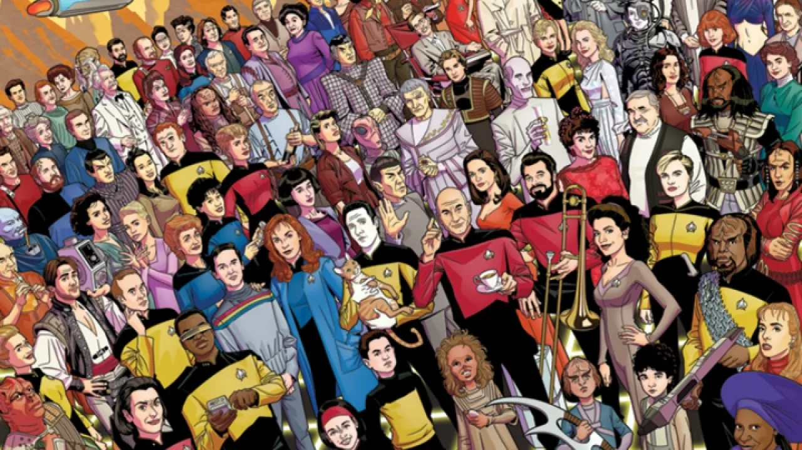

Summary of Movies
Star Trek The Motion Picture: In the 23rd century a starfleet detects an alien craft in space moving toward Earth.
Star Trek The Wrath of Khan: Captain Kirk meets an old enemy Khan and have an intergalactic showdown.
Star Trek The Search for Spock: After Spock's death, Captain Kirk finds out that Spock is resurrected but are caught in a war with the Klingons.
Star Trek The Voyage Home: The former crew of the USS Enterprise are living in exile and receive a distress signal from Earth of a space probe entering Earth's orbit disabling global power and evaporating oceans. The team try to find a way to disable the probe.
Star Trek The Final Frontier: A renegade Vulcan makes Enterprise crew go to a planet at the center of the galaxy.
Star Trek The Undiscovered Country:
Star Trek Generations: A giant energy field engulfs two ships leaving Captain Kirk presumed dead. The captain is Replaced by Picard, he learns that one of the disaster's survivors plans to enter the field by destrying a star.
Star Trek First Contact: The borgs try to take over the Earth. It's up to Picard and Data to battle the Borg Queen.
Star Trek Insurrection: Picard and his crew try to stop the Federation's mission after they uncover the truth.
Star Trek Nemesis: Picard tries to make a peace treaty with the Romulans. But the praetor of the Romulans is a clone lf picard and threatens to destroy Earth.
Star Trek (2009): A young officer named James Kirk and a logical Vulcan named Spock try to move beyond their rivalry to defeat Nero, a Romulan commander who threatens mankind.
Star Trek Into Darkness: With Earth in a crisis Captain Kirk leads his people on a mission to capture one man that can cause mass destruction.
Star Trek Beyond The Enterprise crew crash lands on a mysterious world where the crew have to fight deadly alien creatures to find a way off the hostile planet.
The Original
The origianl Star Trek was a show that came out in 1966. After gaining lots of fans
of the show, Gene Roddenberry decided to make a movie called Star Trek: The Motion
Picture. The film was released in 1979 and the film was financially successful.
But many fans disliked the film calling it dull. The director Robert Wise even said
that it felt unfinished The sequel called "The Wrath of Khan" was written by Harve
Bennett & Jack B. Sowards and Directed by Nicholas Meyer. The movie was released in
1982 and the film was financially successful and is beloved by fans of the series and
critics. The Wrath of Khan was the first Star Trek movie to use CGI. Before in the
The Motion Picture and the series they used practical effects. The sequel "Search for
Spock" was directed by Leonard Nimoy who played Spock and was writen by Harve Bennett
was released in 1984. The film was financially successful and was recieved
well but not as well as the Wrath of Khan. The sequel "The Voyage Home" was directed by
Leonard Nimoy and written by Harve Bennett and Gene Roddenberry. The movie was released
in 1986 the film did really well financially and the fans loved the movie. The sequel
titled "The Final Frontier" was directed by William Shatner who played Captain Kirk. The
movie was written by David Loughery and released in 1989. The film did well financially
but the fans dispised the movie. The last sequel of the originals is called "The Undiscovered
Country" was directed by Nicholas Meyer and written by Denny Martin Flinn. The film
released in 1991 and performed greatly financially and liked a lot by the fans/audience.
The Next Generation
The first movie made in the "Next Generation" of Star Trek was "Generations". The film was
was released in 1994 and performed well financially. But fans of the movies/shows disliked
how one of the characters died in the film. The sequel called "First Contact" came out in 1996
and was written by Ronald D. Moore & Brannon Braga and Directed by Jonathan Frakes the film
was a financial success and fans like it. The sequel called "Insurrection" was made in 1998
was directed by Jonathan Frakes and written by Michael Piller. The film did well financially,
some fans liked the movie others disliked it. The sequel called "Nemesis" is the last movie
of the "Next Generation". The film was released in 2002 and directed by Stuart Baird and written
by John Logan, Brent Spiner, and Rick Berman. The film earned a little bit of money and the
fan reaction was that the movie wasn't good. That is the end of the next generation.
The Reboot
The next three Star Trek movies were directed all by J.J. Abrams. The first movie from Reboot trilogy
was "Star Trek". The film was written by Roberto Orci & Alex Kurtzman. The film resurrected the
the franchise and was a financially successful. Newer fans liked the film, however older fans
didn't like the film that much. The next film was "Star Trek Into Darkness" and was written by
Roberto Orci, Damon Lindelof, & Alex Kurtzman and made in 2013. The movie was a financial success
and has positive reviews from critics. But the fans disliked the film because of the plot and it's
portrayal of characters. The sequel called "Star Trek Beyond" was made in 2016 and written by
Simon Pegg & Doug Jung. The film made enough financially but got less than the previous film.
The critics didn't like the film and neither did the fans. While there are some that liked the
film the majority didn't like it. There is a tv show that came out recently called "Picard" in which
it tells the story of the next generation crew and is getting positive reviews.